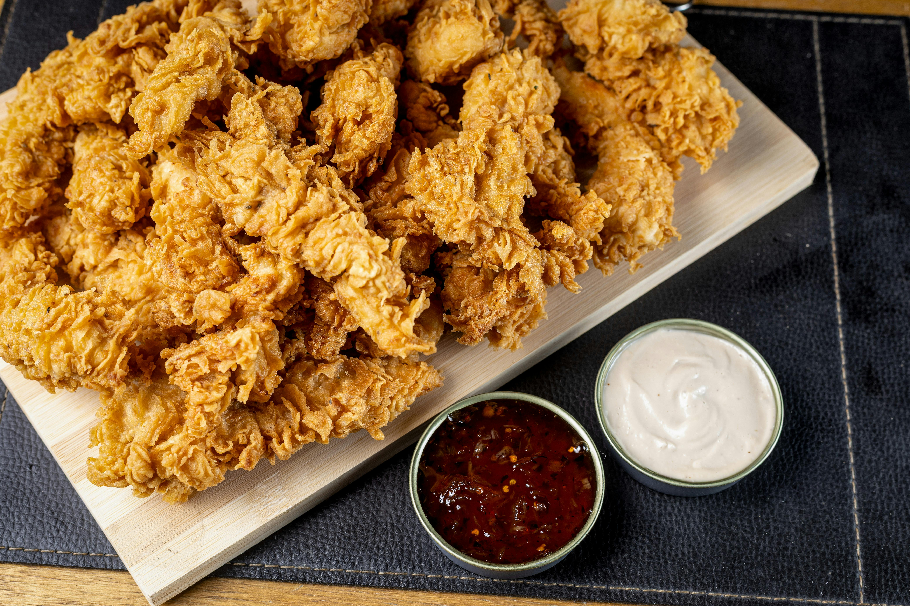

Cajun Chicken

These Cajun-style grilled chicken breasts can be served hot or cold as an entrée, on a Caesar salad, or in a sandwich.
Ingredients
- 2 cups vegetable oil
- 2 tbsp Cajun seasoning
- 2 tbsp dried italian seasoning
- 2 tbsp lemon-pepper seasoning
- 1/4 tsp garlic powder, to taste
- 10 skinless, boneless chicken breast halves - pounded into 1/2 inch thickness
Steps
- Whisk oil, Cajun seasoning, Italian seasoning, lemon-pepper seasoning, and garlic powder together in a large glass or ceramic bowl. Add chicken and toss to evenly coat. Cover the bowl with plastic wrap and marinate in the refrigerator for 30 minutes.
- Preheat an outdoor grill for high heat and lightly oil the grate.
- Remove chicken from marinade and shake off excess. Discard remaining marinade.
- Grill chicken on the preheated grill until juices run clear, 6 to 8 minutes per side. An instant-read thermometer inserted into the center should read at least 165 degrees F (74 degrees C).
Home